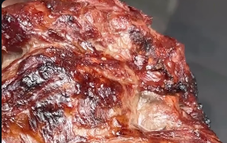
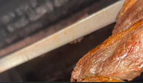

ARACAJU SERVIDA COM VERDADE
A comida que faz
a cidade voltar.
Pratos com sabor de casa, churrasco no ponto e uma mesa que já faz parte da rotina de Aracaju.
NÃO É SÓ ALMOÇAR
O SABOR QUE JÁ É TRADIÇÃO
Quando a comida é de verdade, ela não precisa inventar moda.
Esta seria a página oficial para transformar cada visita do Instagram em uma escolha simples: almoçar na casa, pedir delivery ou descobrir o que tem de melhor hoje.
Ver horários e endereço →ESCOLHAS PARA O SEU DIA
Da churrasqueira
para sua mesa.
FOTOS REAIS DO PERFIL
@SILVIOCOMIDACASEIRA
Quentinha
do dia
Uma escolha prática para quem quer sabor de comida feita em casa.
SEU ALMOÇO COMEÇA AQUI
Do Instagram
direto para a mesa.
PARA QUEM QUER CHEGAR
Tem lugar pra você
todo dia.
Horários
Domingo a domingo
10h às 18h
Onde fica
Av. Mamede Paes Mendonça, 1161
Aracaju, SE
Pedido
Delivery e retirada
pelo atendimento oficial
A CASA DO SÍLVIO
Chega com fome.
Sai com história.
Uma página completa também resolve aquela dúvida de sempre: onde fica, que horas abre e qual o melhor caminho para pedir.
Abrir no mapa ↗COMIDA CASEIRA DO SÍLVIO